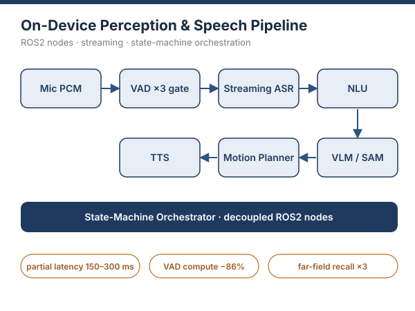
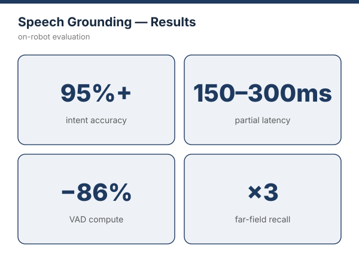

Streaming Multimodal Speech Grounding for Real-Time Human–Robot Interaction
Technical Report, 2026
An end-to-end voice-to-action stack for service robots: mic PCM → VAD → ASR → NLU → VLM/SAM → motion planner → TTS, fully decoupled as ROS2 nodes under a state-machine orchestrator. I rebuilt the streaming-ASR path (stable 150–300 ms partials), designed a three-stage voice-activity gate that cut inference compute by 86% and tripled far-field recall, and moved color grounding from HSV heuristics into the vision–language stage to eliminate referent mis-rejections.